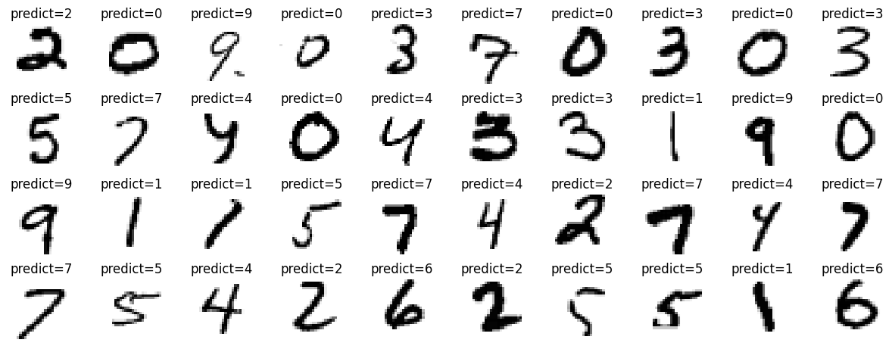

Digit Recognizer with CNN (MNIST)
A beginner’s exploration into Convolutional Neural Networks (CNNs)
Project Introduction
One of the most common projects for begginers to learn about Convolutional Neural Networks (CNNs) is the MNIST dataset. The MNIST dataset is a collection of 28x28 pixel grayscale images of handwritten digits (0-9). The goal of this project is to build a CNN model that can accurately classify these handwritten digits. It is one of the most popular datasets available on Kaggle and is often used as a learning tool for beginners in the field of deep learning.
In this project, we will learn about CNNs, how they work, and how to build a simple but effective CNN model using TensorFlow and Keras. We will also explore techniques such as data preprocessing, model training, and evaluation.
Dataset Overview
The MNIST dataset consists of 60,000 training images and 10,000 test images. Each image is a 28x28 pixel grayscale image of a handwritten digit (0-9). The dataset is divided into 10 classes, one for each digit. The goal is to build a model that can accurately classify these images into their respective classes.
Another common method to expand our dataset is through data augmentation. Data augmentation is a technique used to artificially increase the size of the training dataset by applying random transformations to the images. This helps the model generalize better and improve its performance on unseen data. In this scenario, we apply basic transformations such as stretching the images without fundamentally changing the content.
Understanding Convolutional Models
One of the key challenges of this dataset is the simplicity of the images. The digits are handwritten and can vary in style and quality. This makes it a good dataset for beginners to learn about image classification and CNNs.
The most common structure of a CNN model consists of convolutional layers, pooling layers, and fully connected layers. Convolutional layers are used to extract features from the input image, while pooling layers are used to reduce the spatial dimensions of the feature maps. Fully connected layers are used to make predictions based on the extracted features.
To be more detailed, a convolutional layer is similar to a sliding window that moves across the input image. Through this sliding windows, a matrix calculation is done with a filter (also known as a kernel). This results in a feature map that highlight small patterns in the image. We the extract these smaller patterns and slowly pass them through the network to create larger patterns. We do this process iteratively to create a more complex model.
A more intuitive way to understand this can be seen in the following video:
Convulutional Neural Network Model
The following code is a simplified version of the CNN model. For a more detailed implementation, please refer to the full code on colab here
# CNN Model
# CNN Architecture works by Convolutions, Pooling and then Flattening before the Fully Connected Layer.
model = Sequential([
# Convolutional Layer process
layers.Conv2D(32, kernel_size=3, padding='same', activation='relu', input_shape=(28,28,1)),
# Pooling acts as a downsampling filter. It reduces the dimensionality of each feature map but retains the most important information.
layers.MaxPool2D(pool_size=(2,2), strides=(2,2)),
# Dropout is a regularization technique where we randomly set neurons in a layer to zero. This helps prevent overfitting and improve training.
layers.Dropout(0.2),
# Batch Normalization normalizes the activations in the previous layer at each batch.
layers.BatchNormalization(),
# We do this 3 times to increase the depth of the network. This allows the network to learn more complex features.
layers.Conv2D(64, kernel_size=3, padding='same', activation='relu'),
layers.MaxPool2D(pool_size=(2,2), strides=(2,2)),
layers.Dropout(0.2),
layers.BatchNormalization(),
layers.Conv2D(64, kernel_size=3, padding='same', activation='relu'),
layers.MaxPool2D(pool_size=(2,2), strides=(2,2)),
layers.Dropout(0.2),
layers.BatchNormalization(),
# Flatten the output from the convolutional layers so that it can be input into the fully connected layer.
layers.Flatten(),
layers.Dense(512, activation='relu'),
layers.BatchNormalization(),
layers.Dropout(0.3),
layers.Dense(10, activation='softmax'),
])After training
We get the following results after training the models in the last 5 epochs:
460/460 - 1s - 2ms/step - accuracy: 1.0000 - loss: 0.0118 - val_accuracy: 0.9931 - val_loss: 0.0253
Epoch 19/50
460/460 - 16s - 34ms/step - accuracy: 0.9821 - loss: 0.0571 - val_accuracy: 0.9917 - val_loss: 0.0342
Epoch 20/50
460/460 - 1s - 1ms/step - accuracy: 0.9756 - loss: 0.0700 - val_accuracy: 0.9917 - val_loss: 0.0351
Epoch 21/50
460/460 - 16s - 34ms/step - accuracy: 0.9811 - loss: 0.0582 - val_accuracy: 0.9936 - val_loss: 0.0269
Epoch 22/50
460/460 - 1s - 1ms/step - accuracy: 0.9878 - loss: 0.0299 - val_accuracy: 0.9936 - val_loss: 0.0269
The model has an accuracy of 99.36% on the validation set after 22 epochs. This is a good result and shows that the model is performing well on the test data. We can show a simple list of the predictions and the actual inputs to see how well the model is performing. 
Results and Conclusion
This is a simple but effective CNN model that can accurately classify handwritten digits from the MNIST dataset. We have learned about CNNs, how they work, and how to build a CNN model using TensorFlow and Keras. We have also explored techniques such as data preprocessing, model training, and evaluation. However, there are still many ways to improve the model. And we can further explore the specific hyperparameters and the architecture of the model to improve its performance. We can also try different data augmentation techniques to further improve the model’s performance. Also, we didn’t talk about optimizations and such, but as a starting point we use the Adam optimizer and the cross-entropy loss. Understanding this two concepts can help us build better models in the future. I hope to discuss further on this in the future.